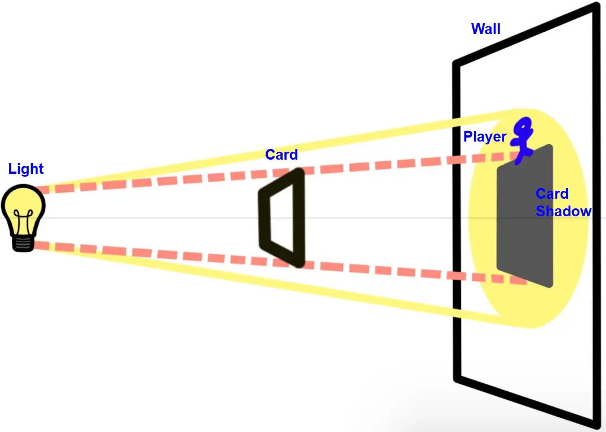
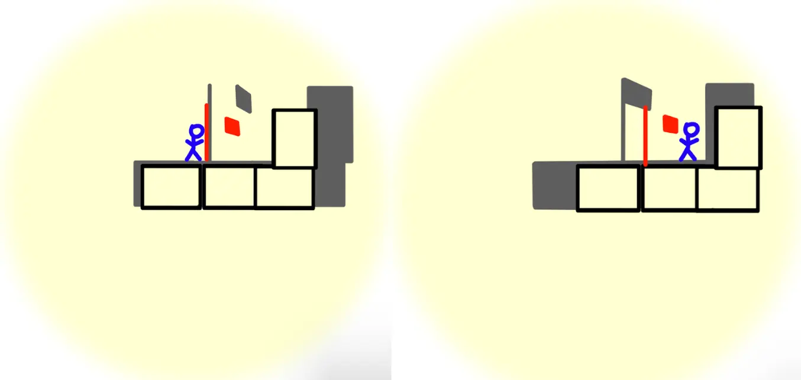
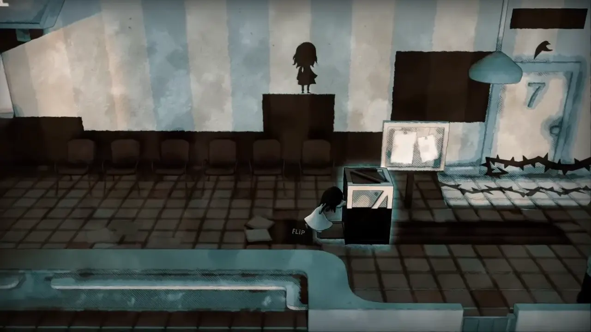
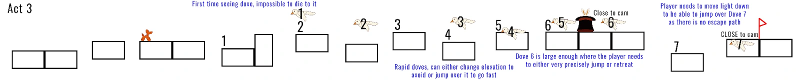
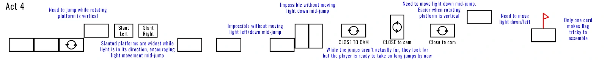
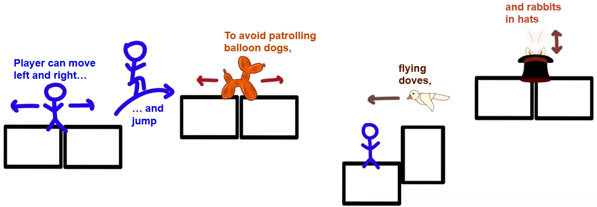

Shadow Magic
2-D platformer where you play as a magician trapped in the shadow realm.
Unity
C#
Role:
Developer
Team Size:
5 people
Duration:
3 weeks
Wield the power of light to cast dynamic shadows from iconic stage props. Playing cards form solid platforms, while rabbits, doves, and balloon dogs act as enemies. Combine precise platforming with light and shadow manipulation to nail tricky jumps and avoid hazards.
Responsibilities
Developer
- Coded the camera and light movement to track the player intuitively.
- Helped to design the enemy behaviors.
- Developed the candle hazards and dove enemies.
- Connected all levels to the LevelManager, ensuring consistency across gameplay.
- Set up controller support with both gameplay and UI.
Process
Shadow Magic was developed over a 3-week sprint. The team was tasked with creating a platformer that had a "unique character."Very early on, we decided to center the game around the concept of light and shadow manipulation, which led to the idea of a magician trapped in a shadow realm. One of our earliest iterations of the light mechanic was to have the player control the spotlight to form a flag shadow that served as a checkpoint.








